Heaven is Quiet
2026 · Acrylic painting on canvas
Sweet eternal silence.
A selection of my artwork.
2026 · Acrylic painting on canvas
Sweet eternal silence.

2025 · Acrylic painting on canvas
My father is a proud plant dad. The Tan Hua flower, famously known as the Queen of the Night, is a cactus bloom that opens only for a single evening a year starting at sunset and wilting by sunrise. Having never before seen him so excited about a plant, I painted it for him to preserve that moment forever.

2025 · Acrylic painting on canvas
I was lucky enough to vist the original statue this painting is depicting which is The Little Mermaid, located in Copenhagen, Denmark. Unfortunately, my brother managed to slip on a rock and fall into the ocean right next to the statue in front of all the tourists.
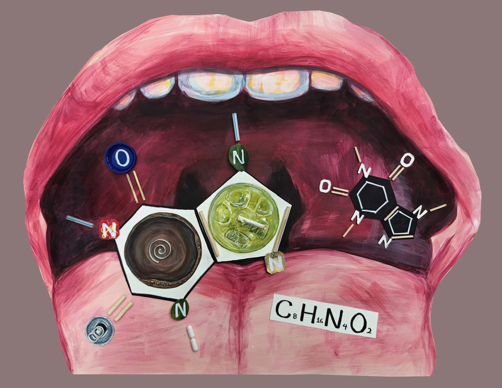
2024 · Multi-media on paper
As an individual has become increasingly more dependent on caffeine to make it through the day, I felt inspired to create a piece based on it. To me, this piece exemplifies what you're putting into your body every time you drink tea, coffee, or energy drinks, which ultimately can hurt you when overconsumed. When it came to the caffeine molecules at the front, I had to do some research to recall my chemistry understanding of the structure so that I could gather the materials necessary for the project.
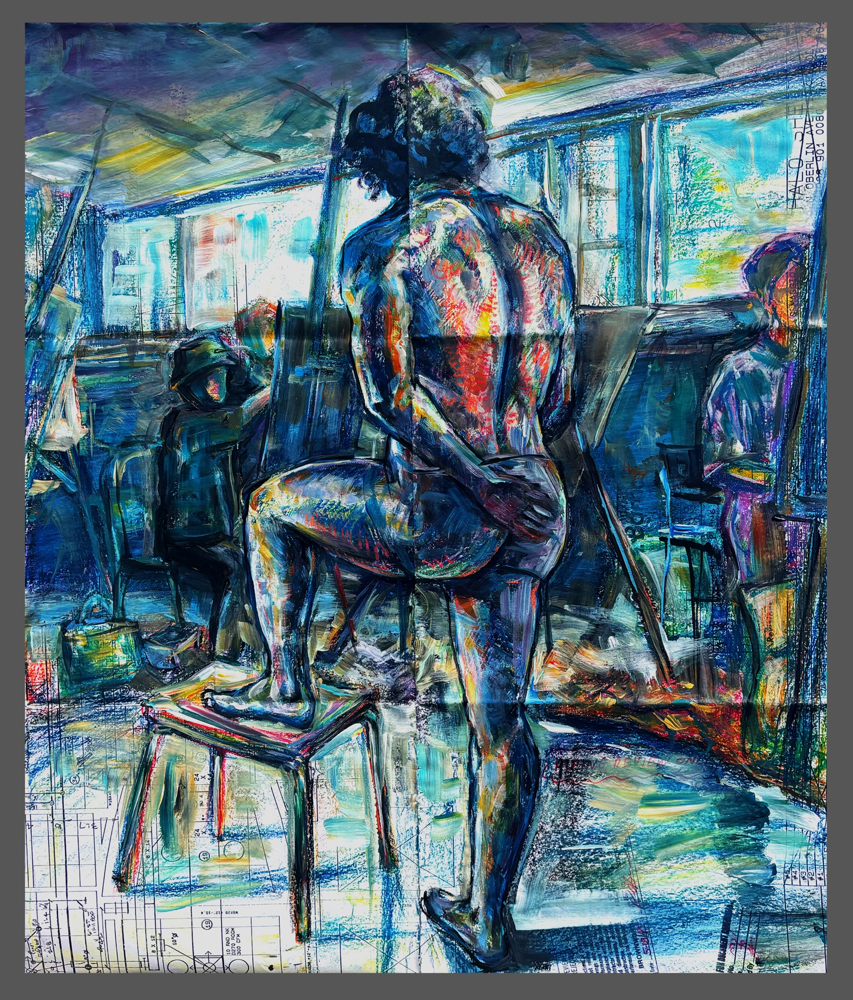
2024 · Pastel and acrylic paint on paper
I like the texture and colors I used here.
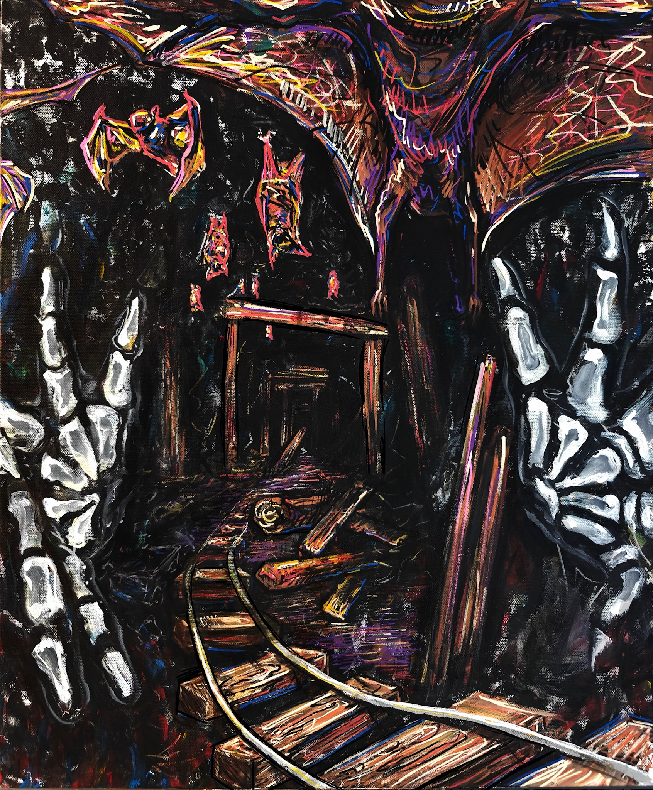
2024 · Acrylic marker and paint on canvas
I created this piece as an exploration of my mental health, as I was in a creative slump at the time.
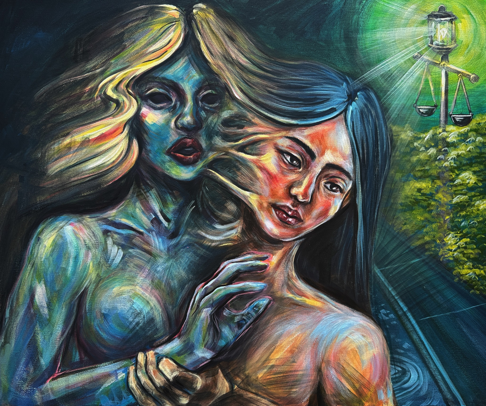
2024 · Acrylic paint on canvas
I created this piece to explore the textures and ideas of separating an individual from a part of themselves. In this case, it was the beauty standard that I had familiarized myself with online. Luscious, curly hair, a small nose, big lips and big eyes were all traits I found myself lacking and frustrated that I couldn't change. This piece demonstrates the acknowledgment that I don't have to fit into that beauty standard and separating myself from it, while still recognizing the grasp it has on me and my life.
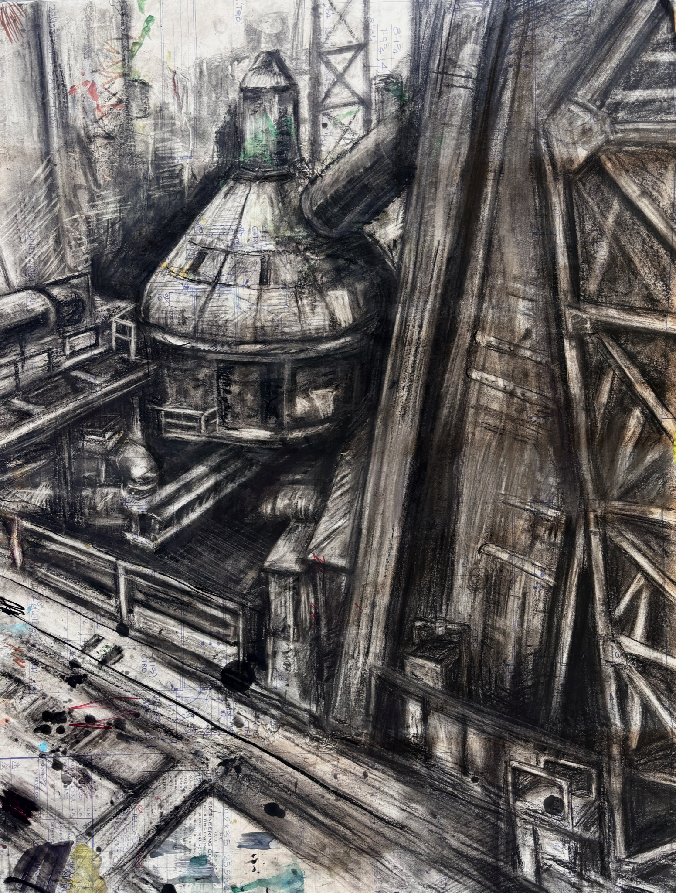
2024 · Charcoal on paper
A palimpsest is defined by the Oxford Language Library as "a manuscript or piece of writing material on which the original writing has been effaced to make room for later writing but of which traces remain". This piece to me is both literally and metaphorically a palimpsest since the paper used in its creation was originally blueprints for a house, before then becoming a protective layer for a table from paint and markers until it finally reached my easel. Although much of the color is covered in the more busy patches of the piece, there are still traces of its original writing in the corners and empty parts. Metaphorically, big industrial infrastructure and factories are the later writings that have been written over the effaced, original writing, the nature and land that had existed there before it.
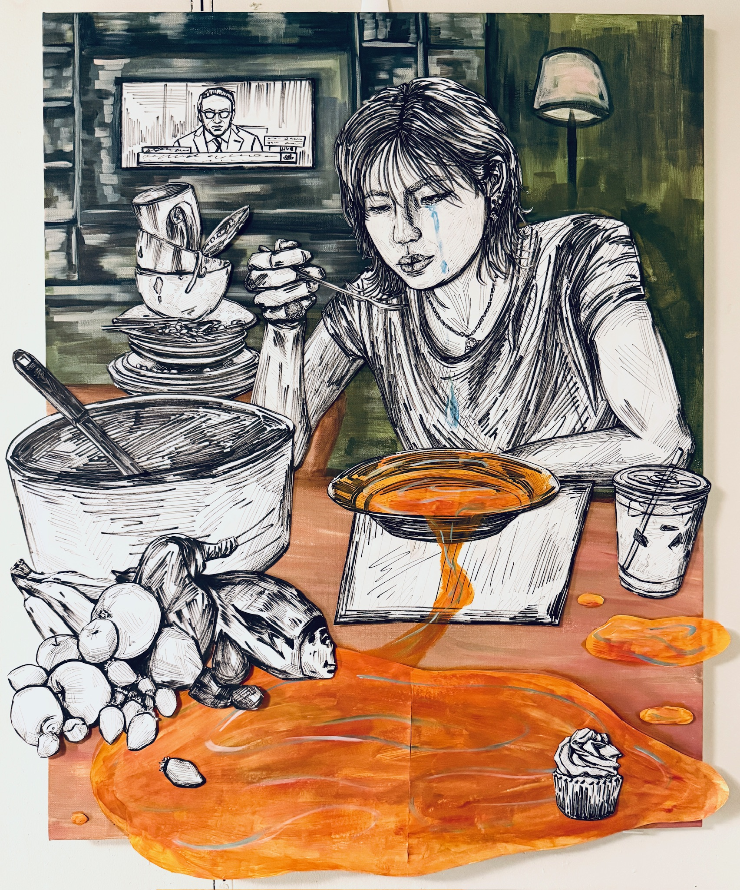
2026 · Ink and paper on canvas
A meal flavored by my own tears.
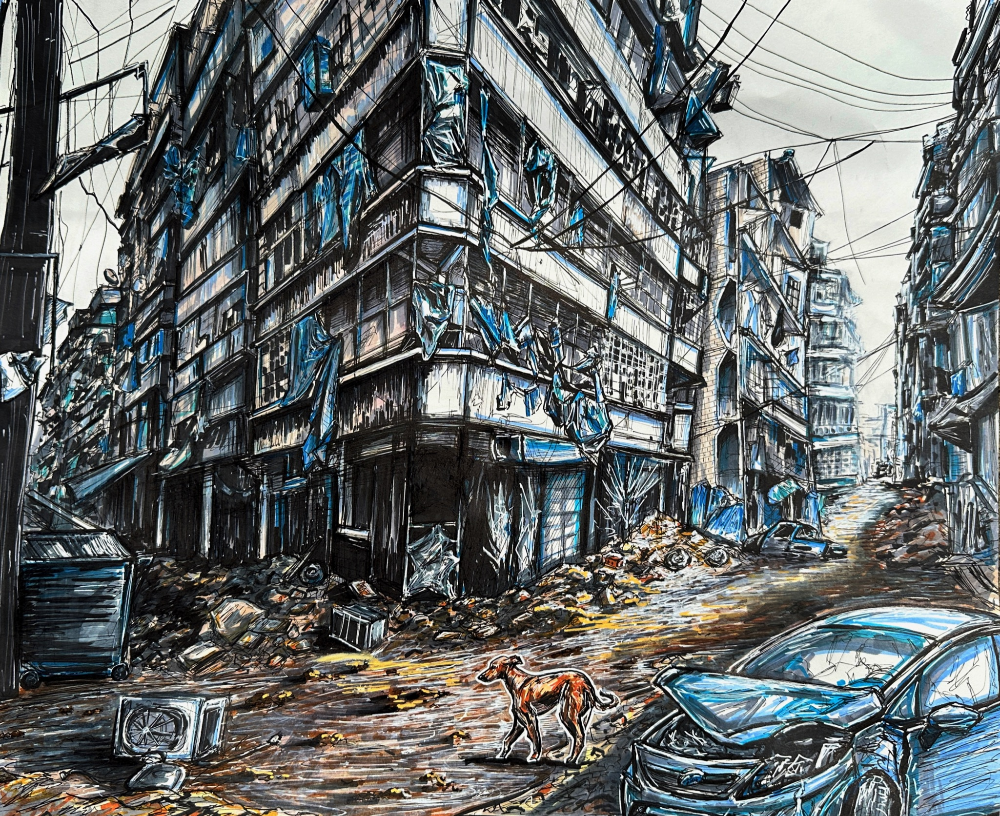
2024 · Ink, alcohol marker and gel pen on paper
I created this piece to explore the difference in mood created by different line weights, as well as to create an environment through art that conveyed abandonment. Although I initially had not planned on drawing a dog into the scene or the ray of light that it steps into, I like that it is not the first subject you notice with the building and the clutter of broken objects overwhelmingly standing out. But once you look closer, the lone dog seems like the main character of the entire piece; it is the only thing with a semblance of movement or being alive.
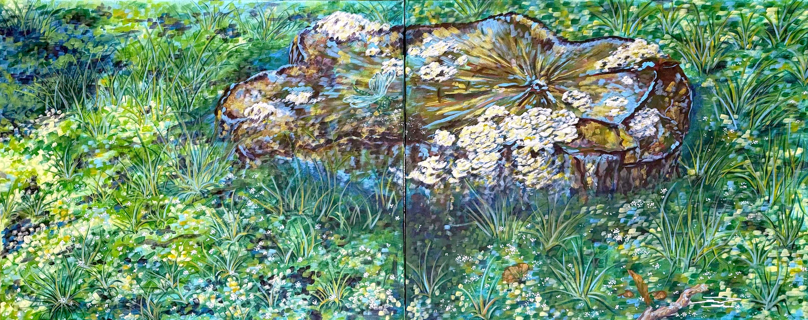
2025 · Acrylic painting on canvas
Just a little reminder to go outside. I often passed this tree stump on my way to my high school tutoring job and I was almost fascinated by the life within and around it.
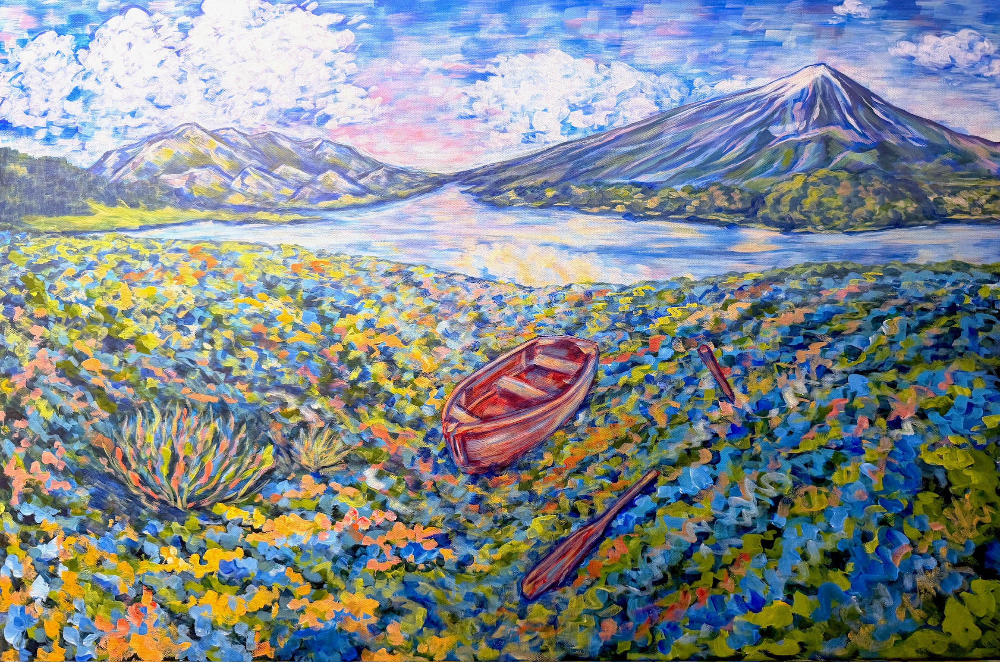
2026 · Acrylic paint on canvas
At the time of painting this artwork I was 19 years old. 20 wasn't too far off; I was getting older than I thought. A distant dream was the ignorant joy of my youth or something like that.
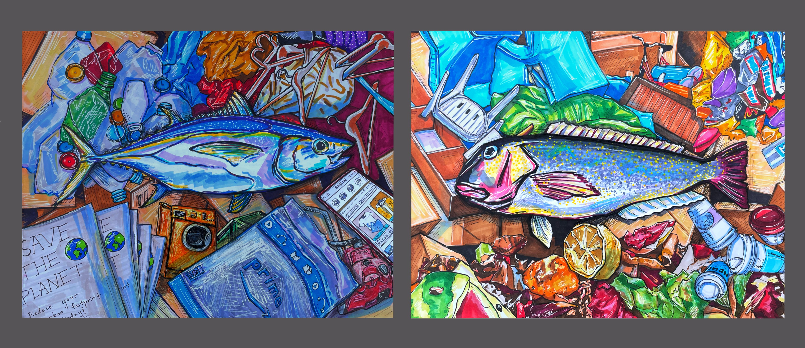
2024 · Ink, alcohol marker and gel pen on paper
Even though fish are born in, raised in, and spend their whole life swimming and living in the water, they can "drown" as well when not enough air gets through their gills. Although we're the creators, the consumers, and the discarders of trash, that does not mean it will not somehow bite us back. Ending up in landfills, the ocean, and in our air and food is effectively our form of "drowning", as something we are so familiar with can be dangerous to us.
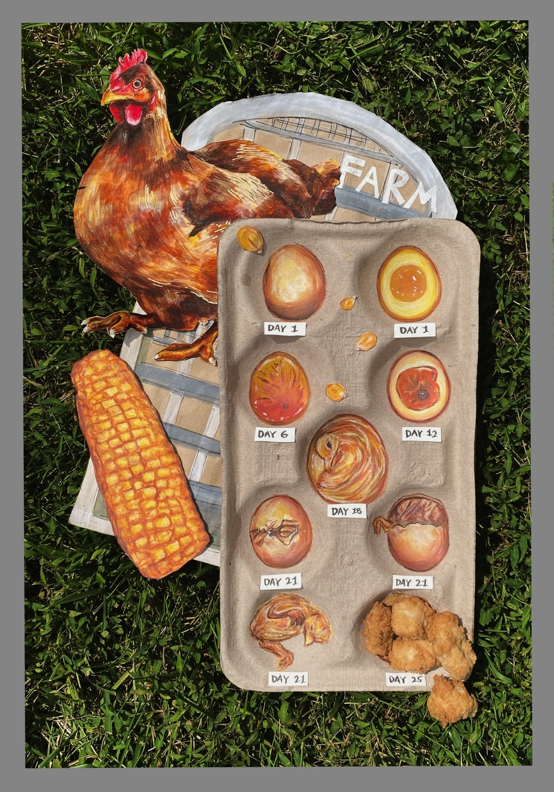
2024 · Multimedia
Probably my favorite piece I've created so far. Pretty self-explanatory. The chicken nuggets are from Chick-Fil-A.